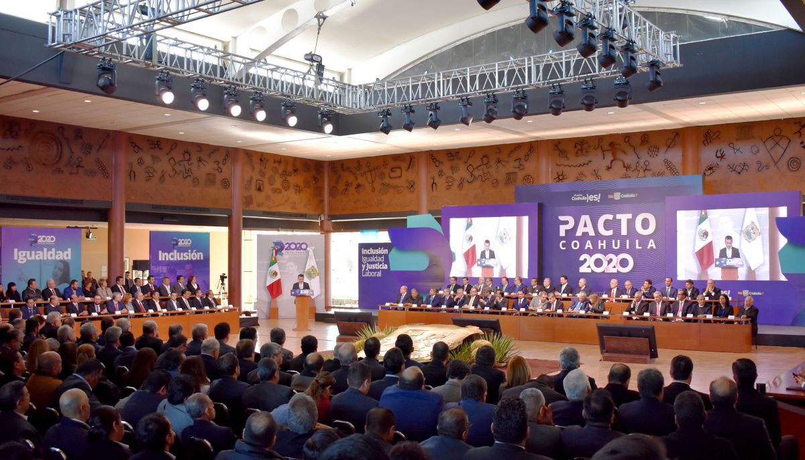
Vinculación interinstitucional
Por medio del consenso de voluntades con instituciones públicas y privadas, entidades gubernamentales del orden federal, local y municipal, así como poderes públicos de la Federación y de otros estados, fortalecemos la vinculación interinstitucional mediante la concertación de alianzas estratégicas para consolidar un desempeño más profesional y eficiente por parte de nuestra institución.
Durante 2020 suscribimos 11 convenios y un acuerdo estratégico, a través de los cuales, entre otros aspectos, sumamos esfuerzos para fortalecer el ejercicio del notariado en el estado, actualizar los esquemas tradicionales de colaboración judicial, promover la cultura de paz dentro de las instituciones de educación pública media y superior, vincular la actividad académica con la actividad judicial, verificar la adecuada presentación de las declaraciones patrimoniales de nuestros servidores públicos y revisar la evolución de su patrimonio, mantener el intercambio e innovación de herramientas tecnológicas, fortalecer el estado humanista, social y democrático de derecho a través de la vinculación de los valores culturales con la justicia alternativa, y contribuir en la supervisión y vigilancia del quehacer de los órganos jurisdiccionales y no jurisdiccionales en el estado.
Tabla 19. Convenios celebrados por el Poder Judicial del Estado de Coahuila de Zaragoza
| Instancia con la que se subscribe | Objeto del convenio | Fecha de firma |
|---|---|---|
| Observatorio Judicial Capítulo Regional Torreón | Acuerdo estratégico para coadyuvar en la supervisión y vigilancia del quehacer judicial | 27 enero |
| Colegio de Notarios de Coahuila | Fortalecer el ejercicio del notariado y una impartición de justicia más eficaz, pronta, expedita y profesional | 30 enero |
| Tribunal de Justicia Administrativa de Coahuila | Actualizar los esquemas de colaboración judicial | 12 febrero |
| Universidad Vizcaya de las Américas | Vincular las actividades académicas con la actividad judicial | 19 febrero |
| Universidad Autónoma de Coahuila | Promover la cultura de la paz y la formación profesional de estudiantes de disciplinas relacionadas con la impartición de justicia | 02 marzo |
| Universidad Virtual del Estado de Michoacán | Capacitación académica e intercambio de buenas prácticas, y apertura de espacios para que estudiantes de las diferentes licenciaturas en la UNIVIM lleven a cabo sus prácticas profesionales o servicio social en los órganos del Poder Judicial | 12 marzo |
| Secretaría de Fiscalización y Rendición de Cuentas del Gobierno del Estado de Coahuila de Zaragoza | Verificar de manera aleatoria las declaraciones patrimoniales de servidores públicos del Poder Judicial | 16 abril |
| Poder Judicial del Estado de Campeche | Intercambiar herramientas tecnológicas para el desempeño de una administración de justicia más eficiente | 14 julio |
| Secretaría de Cultura del Gobierno del Estado de Coahuila de Zaragoza | Vincular los valores culturales con la justicia alternativa | 17 septiembre |
| Universidad Autónoma del Noreste | Consolidar la justicia alternativa en el estado | 22 septiembre |
| Secretaría de Educación del Gobierno del Estado de Coahuila de Zaragoza | Impulsar una cultura de paz y solución pacífica de conflictos en el estado | 24 septiembre |
| Universidad La Salle | Contribuir en la formación profesional de servidores públicos y estudiantes en las disciplinas relacionadas con la función jurisdiccional | 02 diciembre |
Fuente: Secretaría Técnica y de Transparencia de la Presidencia del Tribunal Superior de Justicia del Estado de Coahuila de Zaragoza. 2020.
Participación en la Comisión Nacional de Tribunales Superiores de Justicia de los Estados Unidos Mexicanos
Durante este año la Comisión Nacional de Tribunales Superiores de Justicia de los Estados Unidos Mexicanos (CONATRIB) nos convocó a participar en las sesiones mediante diversas plataformas, y en ellas pudimos conocer y dar seguimiento a los programas de trabajo planteados.
En abril participamos en la Primera Sesión Ordinaria, en la cual se presentó el Plan de Trabajo correspondiente al 2020; también se dio seguimiento a los temas de interés promovidos por las comisiones y las unidades, y se ratificó la designación del Magistrado Miguel Felipe Mery Ayup como titular de la Unidad de Derechos Humanos e Igualdad de Género de la CONATRIB.
La Segunda Sesión Ordinaria fue celebrada en julio, en la que se presentaron los avances en las labores desarrolladas por los tribunales miembros. También se llevaron a cabo reuniones de trabajo en materia legislativa con los Senadores de la República Ricardo Monreal y Julio Menchaca, que abordaron temas relativos a la reforma al artículo 116 constitucional y la Ley de Mecanismos Alternativos de Solución de Controversias.
En noviembre celebramos la Tercera Asamblea Ordinaria, en la que se desarrollaron contenidos para impulsar la mejora continua en la impartición de justicia. Además, participamos de manera virtual en la 5ª Reunión de la Red Nacional de Estadísticas Judiciales, donde se abordaron temas relacionados a estadísticas con perspectiva de género y Derechos Humanos de la materia penal del sistema acusatorio del fuero común; la actualización del Banco Nacional de Datos e Información sobre Casos de Violencia contra las Mujeres (BANAVIM), en el ámbito de impartición de justicia; se expusieron los módulos estadísticos para la captura de información relacionada con medidas de protección (Ley de Acceso a las Mujeres a una Vida Libre de Violencia, Código Penal); y el INEGI presentó las conferencias “Información Estadística en materia de Justicia Laboral: necesidades de información y mapa de ruta” y “La experiencia del Poder Judicial de Chihuahua en la conformación de la estadística de impartición de justicia”. Asimismo, el Tribunal Superior de Justicia de la Ciudad de México presentó los avances en la propuesta de la segunda etapa de construcción del marco conceptual de la materia familiar (proceso escrito).
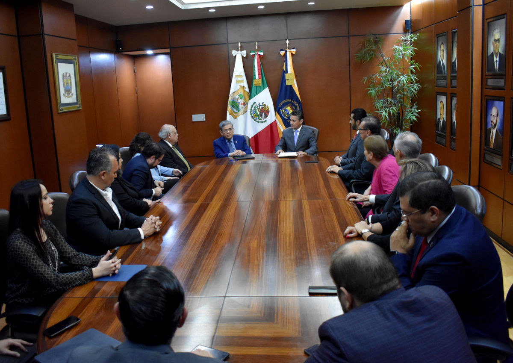
Actividades de la Presidencia del Tribunal Superior de Justicia
Quien preside el Tribunal Superior de Justicia representa al Poder Judicial y ejerce las atribuciones en ejercicio del cargo que la ley le encomienda. En ese ámbito de responsabilidad, este año el Presidente del Tribunal Superior de Justicia realizó las actividades que se desarrollan en este apartado.
Se llevaron a cabo visitas de supervisión a los órganos jurisdiccionales con la finalidad de detectar las necesidades que presenta cada Distrito Judicial, para mejorar los espacios físicos y dotarlos de equipamiento y material necesarios para el correcto desarrollo de sus actividades.
Ante la emergencia sanitaria efectuamos reuniones virtuales con las y los titulares de los órganos jurisdiccionales, en las que además de dar seguimiento a los acuerdos tomados, fijamos criterios, evaluamos el trabajo desarrollado por cada órgano que integra a los distritos judiciales y detectamos los requerimientos humanos, materiales y de infraestructura que surgieron en el contexto actual.
Asimismo, sostuvimos reuniones con los sectores académico, empresarial y de la sociedad civil a fin de retroalimentar las necesidades de la impartición de justicia en nuestro estado. La coordinación con entidades gubernamentales ha sido permanente en los ámbitos de competencia de este poder público.
Gracias a la cercanía con los diversos medios de comunicación nos fue posible dar a conocer información relevante para la ciudadanía sobre nuestra labor cotidiana y las medidas tomadas por el Poder Judicial durante la pandemia, para garantizar la continuidad en la impartición de justicia.
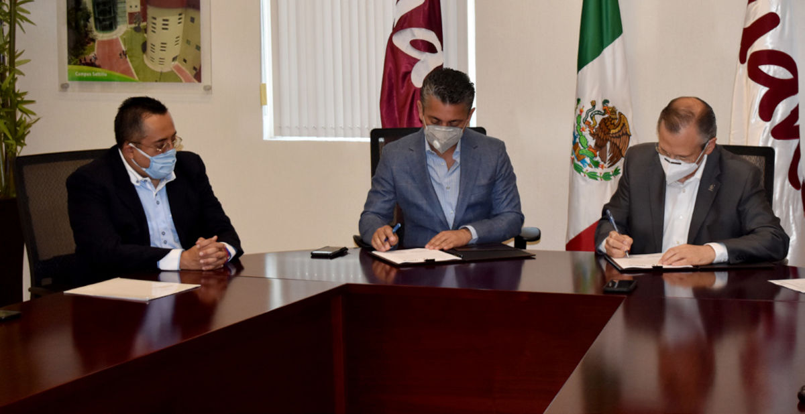
Tabla 20. Reuniones sostenidas por el titular de la Presidencia del Tribunal Superior de Justicia del Estado
- Reunión con el Alto Comisionado de las Naciones Unidas para los Derechos Humanos
- Reunión con el maestro Santiago Piconne, presidente de la Asociación Nacional de Defensorías Públicas Estatales de la República Mexicana A.C.
- Reunión con Colectivos de Familiares de Personas Desaparecidas
- Reunión con jueces en retiro
- Reunión de trabajo con María Novoa, coordinadora del área de justicia de México Evalúa
- Asistencia a la toma de protesta del Colegio de Abogados de Monclova
- Entrega de certificaciones a mediadores privados por parte del Centro de Medios Alternos de Solución de Controversias en el Distrito Judicial de Saltillo
- Asistencia a la firma del Pacto Coahuila 2020 Inclusión, Igualdad y Justicia Laboral
- Asistencia al Conversatorio en materia penal, con la presencia de magistrados y jueces en el Distrito Judicial de Saltillo
- Recorrido por el Centro de Justicia del Distrito Judicial de Saltillo, con medios de comunicación
- Recorrido por el Centro de Justicia del Distrito Judicial de Torreón, con medios de comunicación
- Entrega de certificaciones a mediadores privados por parte del Centro de Medios Alternos de Solución de Controversias en el Distrito Judicial de Torreón
- Asistencia al Conversatorio en materia penal, con asistencia de magistrados y jueces en el Distrito Judicial de Torreón
- Asistencia a la inauguración del lactario instalado en el Centro de Justicia en el Distrito Judicial de Saltillo
- Reunión con Francisco Acuña Llamas, comisionado presidente del INAI, y José Octavio López Presa, presidente del Comité de Participación Ciudadana del Sistema Nacional Anticorrupción
- Reunión de evaluación de medio término del Reto de los 100 días
- Colocación de la primera piedra del Centro de Justicia de Ciudad Acuña
- Asistencia a la toma de protesta del Colegio de Abogados de Acuña
- Recorrido por el Centro de Justicia Penal del Distrito Judicial de Acuña
- Asistencia a la inauguración del Centro de Evaluación Psicosocial del Distrito Judicial de Torreón
- Asistencia al Informe del Rector de la Universidad Autónoma de Coahuila
- Reunión con integrantes del Comité Estatal de Apoyo al Censo de Población y Vivienda
- Asistencia al Diálogo Derechos Humanos, entre la Constitución y los Tratados Internacionales en la Facultad de Jurisprudencia, acompañado del doctor Alejandro Saiz Arnaiz, catedrático de Derecho Constitucional
- Reunión con el licenciado Emilio Barrera Martínez, coordinador Estatal del INEGI, para concertar el cumplimiento del Censo Nacional de Impartición de Justicia Estatal 2020
- Firma de Carta compromiso para la modernización del Archivo Judicial, en el marco del Día del Archivista Coahuilense, con testigos del Sistema Nacional de Transparencia, el Archivo General de la Nación y el Instituto Coahuilense de Acceso a la Información Pública
- Inauguración del Encuentro Nacional de la Asociación Nacional de Defensores Públicos (ANADEPE)
- Clausura del Encuentro Nacional de la Asociación Nacional de Defensores Públicos (ANADEPE), con la asistencia de la Secretaria de Gobernación, Ministra en retiro Olga Sánchez Cordero
- Asistencia al inicio de funciones del Buzón Electrónico para Demandas y Promociones
- Reunión de trabajo con integrantes de ProJusticia
- Reunión de trabajo virtual con Barras y Colegios de Abogados del Estado
- Conversatorio con Equis Justicia para las Mujeres: prácticas innovadoras de los poderes judiciales para atender y frenar la violencia contra las mujeres
- Entrega de vehículos a notificadores de los distritos judiciales de Monclova y Sabinas
- Instalación de la comisión de Juzgados Especializados en Violencia Familiar
- Toma de protesta a nuevos magistrados y jueces
- Reunión virtual con Fundación Ortega y Gasset
- Reunión con la licenciada María Leticia Sánchez Campos, titular de la Procuraduría para los Niños, Niñas y la Familia de Coahuila
- Asistencia a la Inauguración del C4 en Saltillo
- Reunión con magistrados en retiro
- Conferencia Coahuila y su perspectiva ante el T-MEC, con Idelfonso Guajardo Villarreal
- Reunión con asociaciones civiles sobre la Ley para la Familia
- Reunión virtual con jueces y magistrados sobre la implementación del Buzón Electrónico
- Reunión con notarios públicos de Monclova
- Verificación del inicio de labores de los Juzgados Letrados y de Primera Instancia de reciente creación
- Asistencia a la inauguración del Centro Regional de Identificación Humana
- Asistencia a la firma del Convenio de colaboración para recuperación económica y empleo del estado
- Entrega de reconocimiento por parte del Colegio Abogados Jóvenes de Coahuila A.C., por la implementación de nuevas tecnologías en la impartición de justicia
- Asistencia a la Mesa de trabajo del Programa Estatal de Derechos Humanos 2019-2023
- Asistencia a la Ceremonia de cancelación del timbre postal conmemorativo por el 100 aniversario luctuoso de Venustiano Carranza
- Asistencia al arranque de la campaña Septiembre mes del testamento
- Reunión de trabajo con integrantes de COPARMEX Saltillo
- Asistencia a la entrega del nuevo Cuartel Militar en Jiménez, Coahuila de Zaragoza
- Reunión de trabajo de los integrantes del Sistema Estatal para la Igualdad entre Hombres y Mujeres en el Estado
- Asistencia a la conferencia La reforma con y para el Poder Judicial, impartida por el Ministro Arturo Zaldívar Lelo de Larrea
- Supervisión de obra del Centro de Justicia de Ciudad Acuña y visita a predios previo al inicio de la construcción del Centro de Justicia en Sabinas
- Reunión con el Observatorio Ciudadano, Capítulo Torreón, seguimiento a plan de trabajo
- Asistencia a la Sesión solemne conmemorativa del Grito de Independencia
- Reunión virtual con integrantes de la Red de Mujeres de la Laguna para la presentación del modelo de Juzgados Especializados en Violencia Familiar
- Conferencia a miembros de la COPARMEX denominada Juzgados sin papel: iniciativa para la digitalización del servicio de impartición de justicia
- Reunión con magistrados y jueces del Distrito Judicial de Torreón y San Pedro
- Arranque de capacitación de Juzgados Especializados en Violencia Familiar
- Reunión de trabajo con integrantes de la Comisión de Sistematización de Tesis
- Asistencia a las conferencias impartidas con motivo de la celebración del XV Aniversario del Centro de Medios Alternos de Solución de Controversias
- Presentación del Sistema Expediente Virtual 2.00
- Reunión con Barras y Colegios de Abogados en Piedras Negras
- Reunión con Barras y Colegios de Abogados en Acuña
- Supervisión de obra del Centro de Justicia en el Distrito Judicial de Acuña
- Inauguración de la sala de audiencias en materia civil de Primera Instancia en el Distrito Judicial de Saltillo
- Presentación del Sistema de Digitalización de Archivos y Portal de Pagos en Torreón
- Asistencia a la inauguración de Multideportivo El Sarape
- Reunión de seguimiento a Juzgados Especializados en Violencia Familiar
- Reunión con el licenciado Alfonso Yáñez Arreola, Director de la Facultad de Jurisprudencia
- Reunión con jueces para el seguimiento de la implementación de plataformas digitales
- Colocación de la primera piedra del Centro de Justicia en el Distrito Judicial de Sabinas
- Reunión con integrantes de la Comisión de Sistematización de Tesis
- Asistencia a la Presentación de la Reforma Constitucional en Materia de Derechos Humanos
- Entrega de los Lineamientos para emisión, aprobación, compilación y publicación de las tesis y jurisprudencias en el Poder Judicial
- Participación en el panel en conmemoración del Día internacional de la eliminación de la violencia contra la mujer, en coordinación con la CONATRIB y la Asociación Mexicana de Mujeres Juezas y Magistradas, A.C. (AMMJUM)
- Asistencia a la inauguración del Concurso Estatal de Mediación Penal, en coordinación con la Universidad Autónoma del Noreste (UANE) y la Fiscalía General del Estado
- Presentación de los Juzgados Especializados en Violencia Familiar
- Entrega de premios del Concurso Nacional de Oratoria México tiene la palabra
- Asistencia al Informe de labores del Gobernador Constitucional del Estado de Coahuila de Zaragoza
- Reunión de trabajo con la maestra Gabriela de León, Consejera Presidenta del Instituto Electoral de Coahuila
- Participación en el seminario Procuración e Impartición de Justicia en Tiempos Actuales
- Reunión de trabajo con Consejeros integrantes del Instituto Electoral de Coahuila
- Cierre de capacitación de Juzgados Especializados en Violencia Familiar, con el Centro de Estudios Socio Jurídicos Latinoamericanos (CESJUL)
- Reunión de trabajo virtual con la maestra Fabiola Alanís Sámano, titular de CONAVIM
- Participación en Diálogos sobre Justicia Penal en Coahuila, convocados por México Evalúa
- Participación en la Sesión ordinaria de la Comisión Nacional para Prevenir la Trata de Personas, como titular de la Unidad de Derechos Humanos e Igualdad de Género de la CONATRIB
- Inauguración del Centro de Justicia de Ciudad Acuña
Fuente: Presidencia del Tribunal Superior de Justicia del Estado de Coahuila de Zaragoza. 2020.
Comisiones del Pleno del Tribunal Superior de Justicia
Las y los magistrados que integran el Pleno del Tribunal Superior de Justicia conformaron comisiones al interior del mismo con la finalidad de atender y dar seguimiento a distintos temas de interés, así como organizar conversatorios y capacitaciones en donde intervenga el personal que integra al Poder Judicial. A su vez, el Magistrado Decano Gabriel Aguillón Rosales aportó su experiencia y guía en los trabajos que desarrollan dichas comisiones.
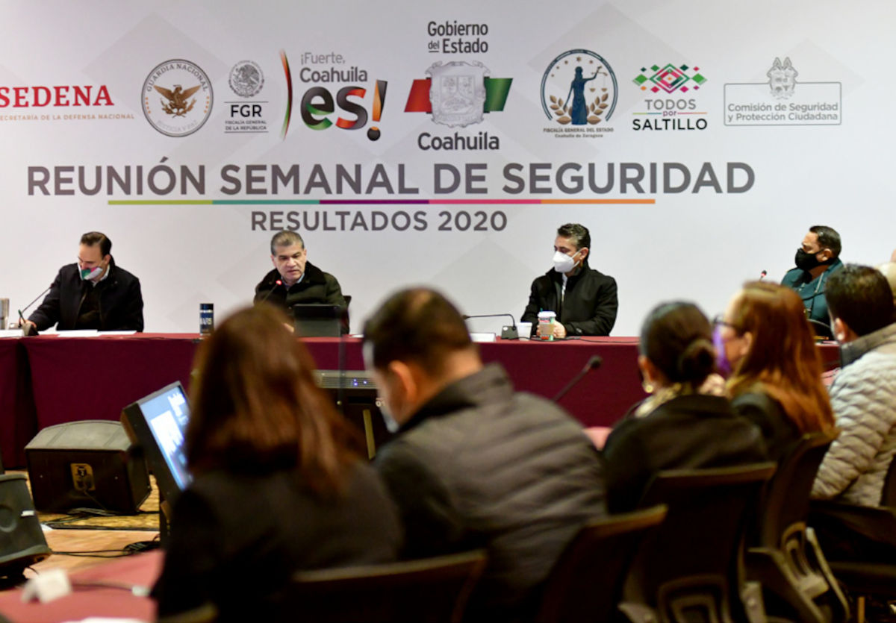
Comisión en Materia Penal y del Sistema de Justicia Penal Acusatorio y Oral
Esta comisión está integrada por el Magistrado Juan José Yáñez Arreola, el Magistrado Homero Ramos Gloria y el Magistrado Manuel Alberto Flores Hernández, quien representa a los distritos judiciales de San Pedro de las Colonias y Torreón. A través de ella se supervisó el funcionamiento de los Centros de Justicia Penal en el estado, así como las acciones implementadas de manera digital ante la pandemia y las resoluciones que ponen fin al proceso penal.
Debido a que continuamos como uno de los poderes judiciales mejor evaluados por la implementación del Sistema de Justicia Penal Acusatorio y Oral, este año —en coordinación con la Organización México Evalúa— dimos seguimiento al proyecto del Observatorio de Audiencias, en donde se mostró de forma general la metodología a aplicar para la evaluación de las mismas bajo una lógica sistémica, considerando el comportamiento de los operadores, el desarrollo de cada etapa procesal y el cumplimiento de los principios, derechos y reglas del propio sistema.
Aunado a lo anterior, continuamos bajo el programa de resultados rápidos en los distritos judiciales de Acuña, Monclova, Río Grande, Saltillo y Torreón, con la finalidad de incrementar la emisión de medidas de protección y su seguimiento efectivo, la judicialización y la conclusión de casos de violencia familiar.
También fomentamos la cercanía a distintas instituciones con la finalidad de mejorar la impartición de justicia, fijando los criterios de valoración de la prueba pericial y la revisión de causas penales de mujeres víctimas de violencia. Lo anterior, con la participación de personal que integra este poder público, la Fiscalía General del Estado, la Secretaría de Seguridad Pública estatal y la USAID, así como de diversas organizaciones que brindan apoyo y asistencia a mujeres víctimas de violencia en el estado.
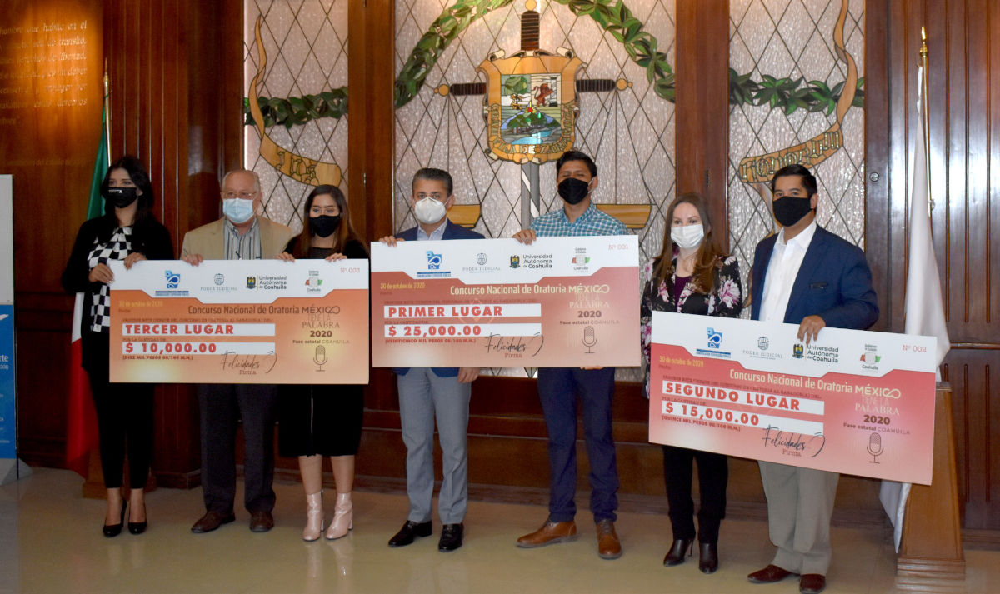
Comisión en Materia Familiar
Durante este año, a través de la Comisión en Materia Familiar conformada por el Magistrado Iván Garza García, la Magistrada María del Carmen Galván Tello y el Magistrado Vladimir Kaiceros Barranco, llevamos a cabo reuniones virtuales para dar seguimiento a los acuerdos que fueron tomados con motivo del inicio de la emergencia sanitaria, además de diversas reuniones de trabajo con juezas, jueces, magistradas y magistrados para la unificación de criterios.
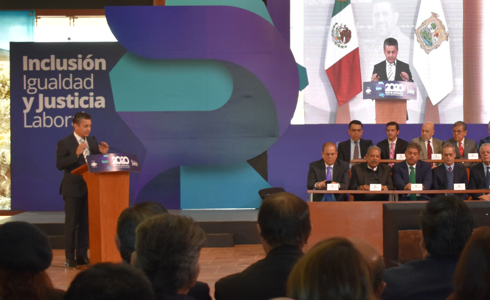
A través de conversatorios en diversos Distritos, generamos los espacios de diálogo e intercambio de experiencias, así como puntos de vista, entre las y los juzgadores que integran este poder público, y de esta manera estar en posibilidad de unificar criterios que enriquecen el quehacer cotidiano en las actividades que desarrollamos.
Comisión en Materia Mercantil
En seguimiento a los trabajos coordinados por la Comisión Nacional de Mejora Regulatoria (CONAMER), para la implementación y mejora en la realización de los juicios orales mercantiles, desde esta comisión integrada por el Magistrado en retiro Alejandro Huereca Santos y el Magistrado Carlos De Lara McGrath desarrollamos actualizaciones en el sistema de gestión en materia mercantil, al cual agregamos el módulo de oralidad y las modificaciones necesarias para los juzgados de competencia mixta. Asimismo, atendimos las recomendaciones derivadas del diagnóstico realizado por la CONAMER para llegar a un cumplimiento de 67 por ciento, estimando completar el porcentaje restante a mediados de 2021 y así solicitar a la CONAMER la visita para la certificación en el Programa Nacional de Juicios Orales Mercantiles (JOM).
Comisión en Materia Civil
Al interior de la Comisión en Materia Civil continuamos con la práctica de conversatorios con magistradas y magistrados, juezas y jueces, y diversos actores especializados en la materia. También sostuvimos reuniones virtuales con juzgadoras y juzgadores de los distritos judiciales, para dar seguimiento a los acuerdos emitidos por el Consejo de la Judicatura con motivo de la emergencia sanitaria. Esta comisión está conformada por el Magistrado César Alejandro Saucedo Flores y el Magistrado Ulises Guadalupe Hernández Torres.
Comisión de Implementación de la Reforma en Justicia Laboral
Esta comisión es presidida por el Magistrado José Ignacio Máynez Varela, en estrecha colaboración con los magistrados integrantes del Tribunal de Conciliación y Arbitraje. En ella, este año se llevó a cabo un ciclo de conferencias de manera virtual con la finalidad de brindar capacitación a todos los operadores en materia laboral.
También se realizó una reunión de trabajo denominada Implementación de la Nueva Justicia Laboral en México, con el fin de establecer objetivos y metas a lograr en esta transición, en los tiempos estipulados para ello.
Comisión de Derechos Humanos
Durante este año, la comisión coordinada por el Magistrado Luis Efrén Ríos Vega llevó a cabo el taller Juzgar con Perspectiva de Derechos Humanos, Sección Penal Cátedra Antonio Berchelmann Arizpe, que se celebró en coordinación con la Oficina del Alto Comisionado de Naciones Unidas para los Derechos Humanos y la Academia Interamericana de Derechos Humanos. El evento tuvo como objetivo principal la discusión con expertos y funcionarios judiciales sobre casos prácticos en materia penal que versan sobre la protección de los Derechos Humanos; se desarrolló de agosto a diciembre de 2020, en nueve sesiones que abordaron temas como derechos de las personas acusadas y sentenciadas, derechos de las víctimas, valoración de la prueba, y la individualización y ejecución de sanciones.
Entre otros trabajos, se continuó con la participación de esta comisión en las sesiones realizadas con colectivos de familiares de personas desaparecidas, el Grupo Autónomo de Trabajo, Defensores de Derechos Humanos y Periodistas y autoridades estatales y federales, para dar seguimiento a los temas de la agenda de Derechos Humanos.
Comisión de Conversatorios en los Distritos Judiciales de Torreón y San Pedro de las Colonias
A través de esta comisión coordinada por el Magistrado José Francisco Gómez Gómez generamos los espacios de diálogo e intercambio de experiencias, así como puntos de vista, entre las y los juzgadores que integran este poder público, y de esta manera estar en posibilidad de unificar criterios que enriquecen el quehacer cotidiano en las actividades que desarrollamos.
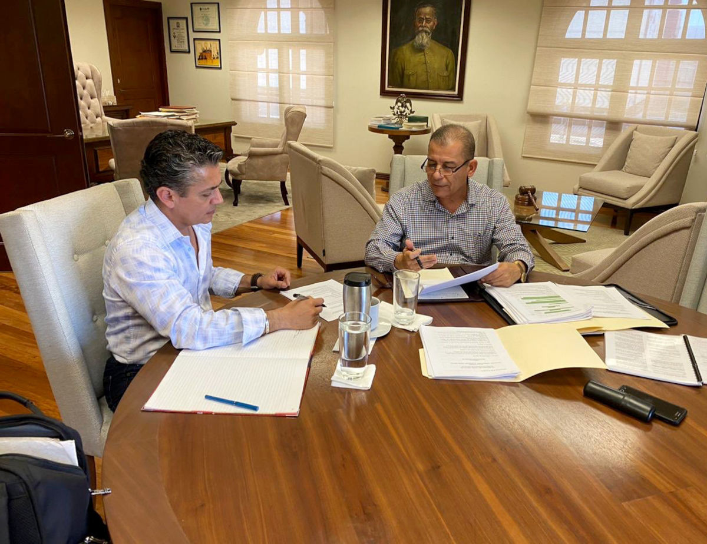
Comisión de Reforma a la Ley Orgánica y Reglamentos Interiores
Esta comisión está integrada por los magistrados en retiro Juan Antonio Martínez Gómez, José Fuentes García, Antonio Berchelmann Arizpe, Armín José Valdés Torres y Natalio Dávila Moreira, quienes a partir de una agenda de trabajo realizaron estudios y análisis de derecho comparado, a fin de incorporar al proyecto de reforma a la Ley Orgánica disposiciones acordes a los más altos estándares en materia de administración e impartición de justicia, establecidos bajo la óptica del respeto y garantía a los Derechos Humanos.
En ese esquema se revisaron y analizaron las constituciones estatales y las leyes orgánicas de los poderes judiciales locales, así como otras a nivel internacional, a fin de comparar distintos sistemas jurídicos en aras de proyectar una reingeniería normativa acorde al nuevo Modelo de Justicia.
Además de las anteriores, durante este año fueron creadas dos comisiones más.
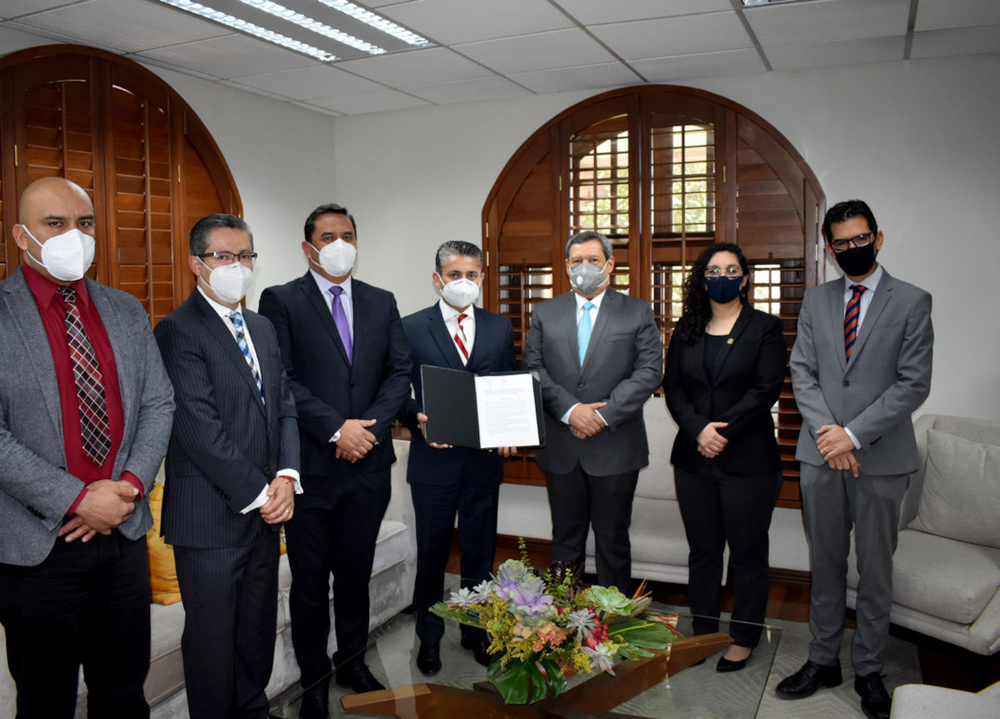
Al contar con una jurisprudencia pública, le brindamos al Estado la transparencia de los criterios de las y los juzgadores, que con plena independencia judicial, deben fundamentar en razonamientos jurídicos que son del conocimiento de las partes intervinientes en un litigio.
Comisión para la Sistematización de Tesis
Fue instaurada como un órgano técnico multidisciplinario encargado de elaborar la regulación relativa a la emisión, sistematización, compilación y difusión de tesis y jurisprudencias emitidas por los órganos jurisdiccionales del Poder Judicial del Estado de Coahuila. La cual está conformada por el Magistrado Homero Ramos Gloria, de la Sala Colegiada Penal; el Magistrado César Alejandro Saucedo Flores, de la Sala Colegiada Civil y Familiar; el Magistrado Vladimir Kaiceros Barranco, de la Sala Regional; la licenciada Claudia Delfina Herrera Villar, Consejera Jurídica de la Presidencia del Tribunal Superior de Justicia; y el maestro Rodrigo González Morales, Secretario Técnico y de Transparencia de la Presidencia del Tribunal Superior de Justicia.
Esta comisión elaboró el proyecto de lineamientos para la emisión, aprobación, compilación y publicación de las tesis y jurisprudencias en el Poder Judicial del Estado, mismos que fueron acordados y difundidos por el Presidente del Tribunal Superior de Justicia en noviembre de 2020.
Comisión de Igualdad de Género
Esta comisión fue establecida con el objeto de dotar al personal jurisdiccional y administrativo de las herramientas necesarias para el desarrollo de su labor desde el enfoque de la perspectiva de Igualdad de Género, y así garantizar su incorporación en los procedimientos judiciales. Se encuentra conformada por las magistradas María del Carmen Galván Tello, María Luisa Valencia García y María Eugenia Galindo Hernández y, entre otras acciones, formó parte de la mesa interinstitucional que desarrolló el Protocolo de Actuación de los Juzgados Especializados en Violencia Familiar contra las Mujeres.
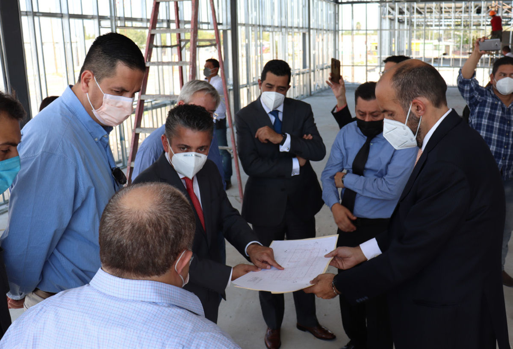
El espacio refleja lo que somos y transforma nuestras acciones. Los espacios dedicados a la impartición de justicia necesitan mostrar la eficiencia que buscamos en los servicios que prestamos a las y los ciudadanos, abogados litigantes y justiciables. En el Poder Judicial la justicia se construye en espacios concretos, en lugares dignos y funcionales.
Recursos Materiales e Infraestructura
Durante este año dimos continuidad a los trabajos de mejoramiento, conservación, adecuación y construcción de nuevos espacios para fortalecer la infraestructura del Poder Judicial del Estado.
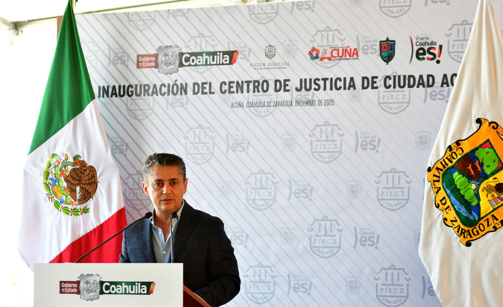
Centro de Justicia de Ciudad Acuña
Ante la necesidad de contar con un espacio digno para la impartición de justicia y otorgar un servicio accesible y de calidad a las y los habitantes de Acuña, Jiménez y Zaragoza, pusimos en operación el Centro de Justicia de Ciudad Acuña; este recinto es producto de la donación de un predio con una superficie de cinco mil 335.15 metros cuadrados por parte del Gobierno del Estado, y representa una inversión del Poder Judicial de 28 millones de pesos. Estimamos que este centro prestará atención a más de 11 mil personas al año con un Juzgado Civil y otro Familiar, equipados con Sala de Audiencia Oral, una Delegación del Instituto Estatal de Defensoría Pública y espacios para el Centro de Evaluación Psicosocial —con un área de convivencia supervisada—, el Centro de Medios Alternos de Solución de Controversias y el Archivo Judicial, además de otro para crecimiento futuro. Todo esto en una superficie construida de mil 410 metros cuadrados.
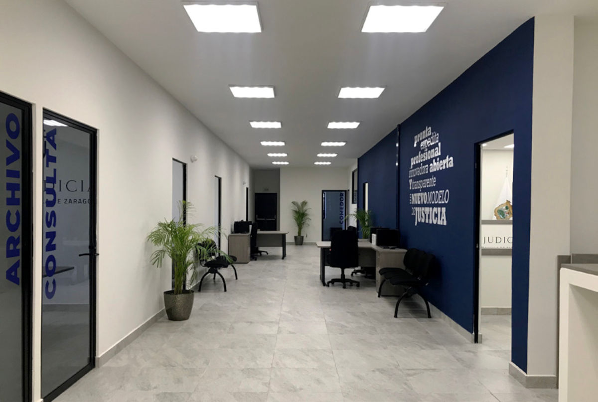
Remodelación de la Sala de Plenos y Sistema de Sesiones
Este año, llevamos a cabo la remodelación de la Sala de Plenos, en la cual se realizó una distribución acorde a un tribunal, con un espacio diferenciado para sus integrantes como máximo órgano de impartición de justicia. Asimismo, se habilitó un área para el Secretario de Acuerdos y otra para la asistencia de público —cuando así se requiera—. Dicha distribución permite una mejor interacción durante el desarrollo de las sesiones.
En este sentido, atendimos la necesidad de renovar el equipo y cableado de audio, video y datos. Instalamos seis cámaras fijas y reubicamos una cámara robótica para mejorar las transmisiones de las sesiones. Además, las y los usuarios de esta sala ahora disponen de un monitor de alta resolución, en el cual podrán observar cualquier documento, presentación o video compartido durante la celebración de las sesiones.
También instalamos una tableta electrónica en el lugar de cada Magistrada y Magistrado, desde la cual se accede a un nuevo sistema para llevar el curso de toda la sesión. Desde el Sistema de Sesiones se realiza el pase de lista, se toma la votación de cada Magistrado en los asuntos que lo requieran y se registran los votos particulares y las intervenciones de cada persona que participa en dichas sesiones. El sistema permite alimentar el apartado del sitio web Sesiones de Pleno, y será adaptado para las sesiones de las salas colegiadas Civil y Familiar y Penal, así como en la Sala Regional.
Con la finalidad de contar con un espacio adecuado para reuniones de trabajo, se reacondicionó el área de la Presidencia del Tribunal Superior de Justicia, que dispone ahora de una sala de juntas con capacidad para 20 personas, misma que cuenta con una pantalla para la proyección de material audiovisual.
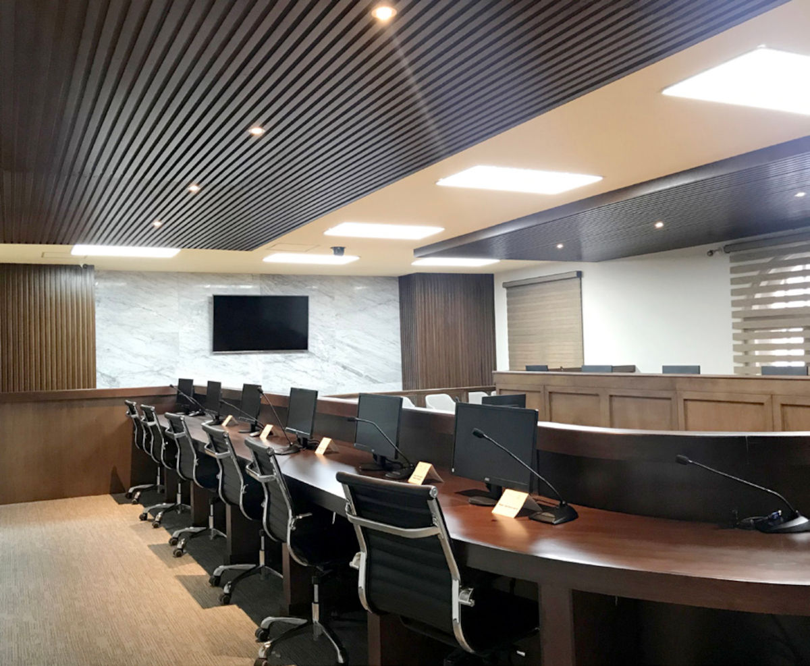
El Poder Judicial no son las sentencias, los expedientes y las actuaciones judiciales, no son los edificios que albergan a las instituciones, el Poder Judicial son todas y cada una de las personas que laboran en los juzgados y en cada oficina de la Judicatura: secretarias, actuarios, jueces, defensores, mediadores, evaluadoras y personal administrativo.
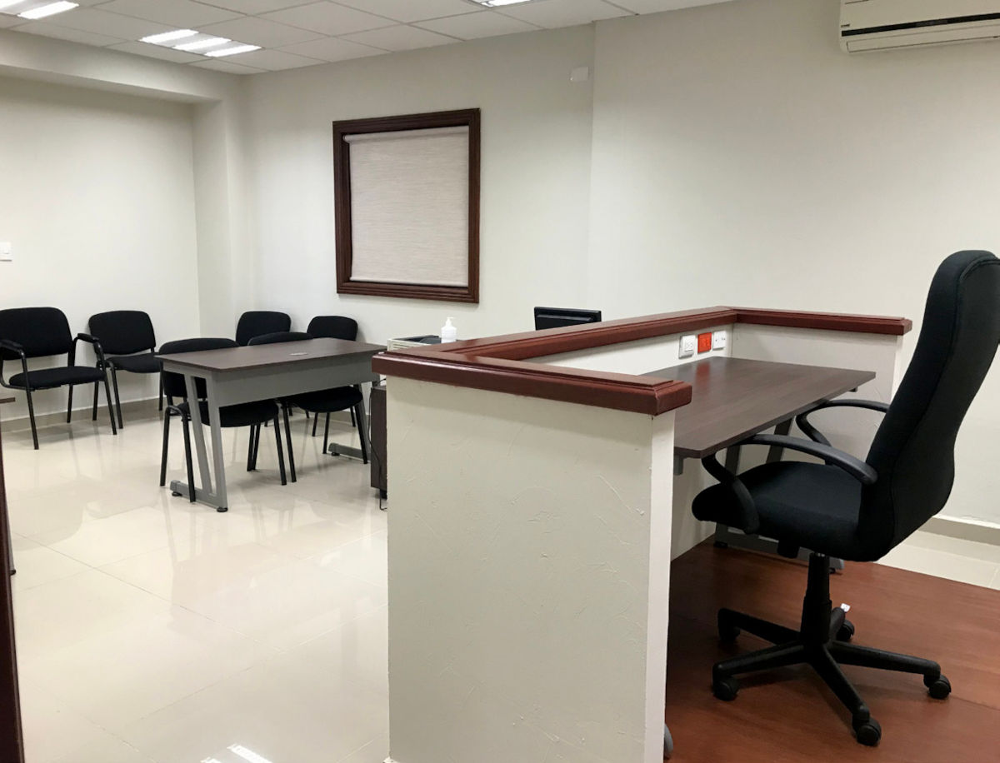
Sala de Audiencia Civil y equipo de transmisión de sesiones para las Salas Colegiadas
Con el fin de dar respuesta a la necesidad de la Sala Colegiada Civil y Familiar de contar con un espacio que cumpla con los requerimientos de accesibilidad, para llevar a cabo audiencias en su calidad de primera instancia, habilitamos una sala con las adecuaciones necesarias para desarrollar esta función en cualquiera de sus materias.
Realizamos la estructuración de cableado e instalación de cámaras y micrófonos para la transmisión de sesiones en vivo de las Salas Colegiadas Civil y Familiar y Penal, así como de la Sala Regional. También dimos mantenimiento preventivo en 45 salas de oralidad y equipamos las Salas de Juicio Oral en los distritos judiciales de Monclova y Saltillo, en las materias Familiar y Mercantil, respectivamente.
Redes de comunicaciones y circuitos cerrados
Durante este año configuramos cuatro conmutadores de servicio de voz PBX —de la marca AVAYA— en cuatro edificios del Distrito Judicial de Saltillo, mediante el servicio de red VPN existente en los equipos FORTINET para la comunicación directa por medio de enlaces propios. Además dimos mantenimiento y actualizamos los equipos de radio enlaces existentes en el estado.
Instalamos la red de área local para cámaras de circuito cerrado en el Juzgado Penal Acusatorio y Oral en el Distrito Judicial de Monclova con sede en Frontera, así como en el Centro de Justicia Civil de Río Grande, en Piedras Negras.
También brindamos acceso inalámbrico para monitoreo de paneles solares en el Centro de Justicia Civil de los distritos judiciales de Saltillo y Río Grande.
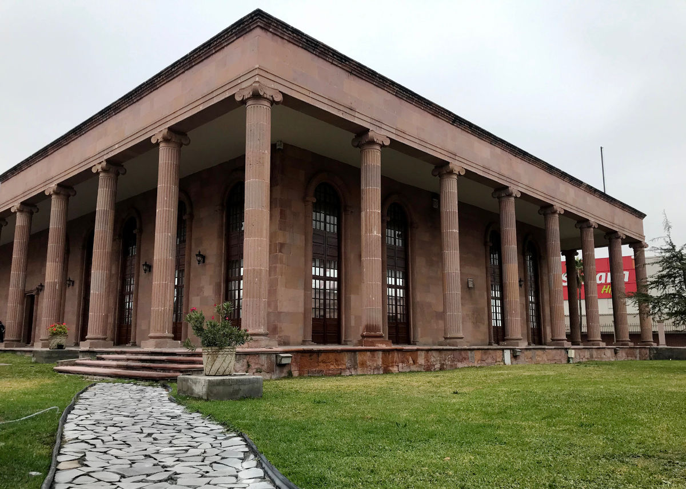
Mejoramiento y adecuación de espacios
En el Distrito Judicial de Torreón entregamos y equipamos un área destinada al Centro de Evaluación Psicosocial; mientras que en el Palacio de Justicia de esa ciudad realizamos maniobras de reparación e instalación de diversos acrílicos y forros de vidrio doble en algunas oficinas, así como mantenimiento preventivo y correctivo a los equipos de aire acondicionado, al elevador y a la subestación eléctrica, entre otras reparaciones generales. También entregamos dos vehículos oficiales para las diligencias de la Sala Regional y del Centro de Justicia Penal.
En junio inauguramos el Centro de Justicia Penal de San Pedro, en donde instalamos equipos de aire acondicionado, llevamos a cabo acciones de mantenimiento general, fumigamos, colocamos nomenclaturas e instalamos el servicio de internet; y en los juzgados familiares revisamos y rehabilitamos la instalación eléctrica, para eficientar el uso y consumo de energía en los espacios.
En el Distrito Judicial de Sabinas colocamos la primera piedra para la construcción del Centro de Justicia de la Región Carbonífera, que albergará los nuevos juzgados civiles y familiares. Estará ubicado en el municipio de San Juan de Sabinas.
También realizamos adecuaciones y trabajos de pintura e impermeabilización en espacios del Centro de Justicia Penal, donde instalamos mobiliario nuevo y reubicamos equipos de aire acondicionado, entre otras acciones de mantenimiento general.
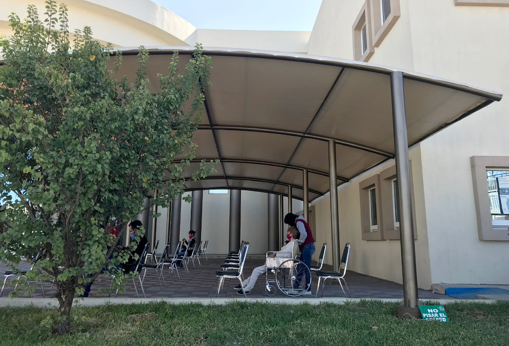
En el Centro de Justicia Civil y Familiar de Monclova adecuamos diversos espacios, instalamos equipos de aire acondicionado y dimos mantenimiento a los ya existentes. También acondicionamos una sala más de juicios orales familiares, que además dará servicio a las audiencias orales mercantiles cuando se requiera; y realizamos reparaciones de fontanería y pintura, así como obras de mejora general, en las oficinas de juzgados.
En el Distrito Judicial de Río Grande hicimos trabajos de reparación, pintura y limpieza en áreas verdes, y rehabilitamos distintos espacios del Centro de Justicia Civil y Familiar; además de que se dotó de mobiliario de oficina y equipo de cómputo, y se dio mantenimiento a los equipos de aire acondicionado de diversos espacios. En la Unidad de Defensa Penal, del Instituto Estatal de Defensoría Pública, instalamos una nueva subestación eléctrica con el fin de mejorar el suministro y distribución de energía.
En el Distrito Judicial de Parras de la Fuente impermeabilizamos y rehabilitamos con pintura las áreas comunes del Juzgado Civil y Familiar, la Delegación del Instituto Estatal de Defensoría Pública y el Centro de Evaluación Psicosocial.
En el Distrito Judicial de Saltillo, en las instalaciones del Palacio de Justicia, realizamos acciones de pintura, plomería y diversas reparaciones; impermeabilizamos, dimos mantenimiento a equipos de aire acondicionado, a los accesos para personas con discapacidad y a las áreas verdes; y entregamos mobiliario y equipo de cómputo a distintas áreas del edificio.
En el Centro de Justicia Civil y Familiar hicimos adecuaciones para la instalación de la Sala de Juicios Orales en el Juzgado Auxiliar Familiar; entregamos mobiliario y equipo nuevo en algunos juzgados; llevamos a cabo trabajos de limpieza a las áreas verdes y dimos mantenimiento al elevador, al sistema de bombeo de agua potable, a la planta de emergencia de energía eléctrica y a los equipos de aire acondicionado; y equipamos el lactario para la atención de usuarias y personal del Poder Judicial, entre otras acciones.
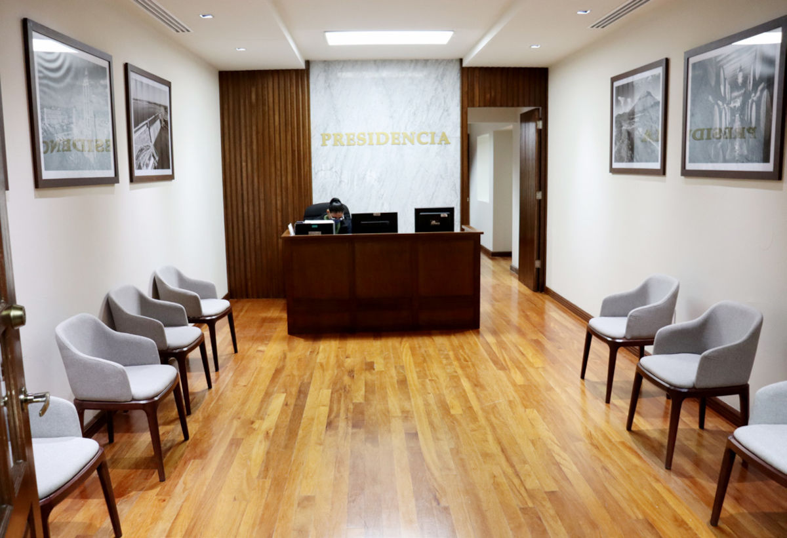
En el Centro de Justicia Penal y edificios que albergan órganos jurisdiccionales, no jurisdiccionales y administrativos, realizamos labores de mantenimiento general, limpieza, reparaciones diversas, mejoramiento y adecuación de espacios. Remodelamos el Centro de Evaluación Psicosocial en Saltillo y las oficinas de la Comisión de Reforma a la Ley Orgánica y Reglamentos Interiores, en la que suministramos el mobiliario requerido.
Con la finalidad de eficientar los recursos por medio de compras consolidadas llevamos a cabo un proceso de Licitación Pública Nacional para la adquisición de material de oficina, entre el que se encuentran seis millones hojas de papel unibond extendido —indispensable para la impresión de las hojas membretadas que utilizan nuestros órganos jurisdiccionales—, dos mil 500 cajas de papel bond en tamaño oficio y 250 cajas de papel bond en tamaño carta, y 12 mil cajas troqueladas de cartón tipo expediente para dar atención a los diferentes órganos del Poder Judicial del Estado.
También dotamos de seis vehículos al Sistema Penal Acusatorio y Oral para el desempeño de sus diligencias.
Durante este año, atendimos mil 354 requerimientos de material de oficina, limpieza, ferretería, refacciones de cómputo y mobiliario; además de 474 órdenes de compra y 380 órdenes de servicio de mantenimiento en general y mantenimiento de vehículos, así como de los inmuebles que alojan los juzgados, áreas administrativas, salas y oficinas que conforman este poder público.
Como parte de las medidas implementadas ante la contingencia por COVID-19, sanitizamos los espacios con los que cuenta el Poder Judicial en el estado; y adquirimos cerca de mil 200 litros de gel antibacterial y 330 litros de líquido sanitizante para su distribución en las oficinas, así como charolas sanitizadoras y tapetes absorbentes, 22 mil cubrebocas de tela y siete mil pares de guantes de látex y neopreno para la protección del personal. Contratamos personal de enfermería para el control de acceso a los edificios y la medición de temperatura, y compramos 300 pruebas para la detección de COVID-19.
De igual forma, dotamos al personal que atiende a la ciudadanía de pantallas protectoras y caretas personales, e instalamos en las oficinas señalizaciones para procurar el distanciamiento social y el uso de gel antibacterial y cubrebocas.
Unidad Jurídica
En materia de adquisiciones y servicios a través de los procedimientos señalados por la Ley de Adquisiciones, Arrendamientos y Contratación de Servicios del Estado, mediante la Unidad Jurídica y la Dirección de Recursos Materiales de la Oficialía Mayor este año realizamos un proceso de Licitación Pública Nacional conforme a lo establecido por la normatividad aplicable.
Tabla 21. Amparos atendidos por la Unidad Jurídica de la Oficialía Mayor
| Amparos | 2020 |
|---|---|
| Amparos | 15 |
| Informe Previo | 1 |
| Informe Justificado | 14 |
| Informe de Cumplimiento | 8 |
| Requerimiento | 4 |
Fuente: Unidad Jurídica de la Oficialía Mayor. Poder Judicial del Estado de Coahuila de Zaragoza. 2020.
Tabla 22. Contratos revisados por la Unidad Jurídica de la Oficialía Mayor
| Por tipo | Cantidad |
|---|---|
| Prestación de servicios | 53 |
| Arrendamientos | 4 |
| Prestación de servicios asimilados | 5 |
| Adendums | 1 |
| Contratos de compra-venta | 2 |
Fuente: Unidad Jurídica de la Oficialía Mayor. Poder Judicial del Estado de Coahuila de Zaragoza. 2020.
Tabla 23. Licitación e Invitación a cuando menos tres participantes
| Procedimiento | Cantidad |
|---|---|
| Convocatorias | 1 |
| Acta de aclaraciones | 1 |
| Acta de entrega de propuestas | 1 |
| Dictamen y fallo | 1 |
Fuente: Unidad Jurídica de la Oficialía Mayor. Poder Judicial del Estado de Coahuila de Zaragoza. 2020.
Tabla 24. Procedimientos laborales atendidos por la Unidad Jurídica de la Oficialía Mayor
| Procedimiento | Cantidad |
|---|---|
| Convenios de terminación laboral extra judicial | 7 |
| Declaración de beneficiarios | 1 |
| Nuevas demandas laborales | 6 |
| Audiencias | 21 |
| Laudos a favor | 1 |
Fuente: Unidad Jurídica de la Oficialía Mayor. Poder Judicial del Estado de Coahuila de Zaragoza. 2020.